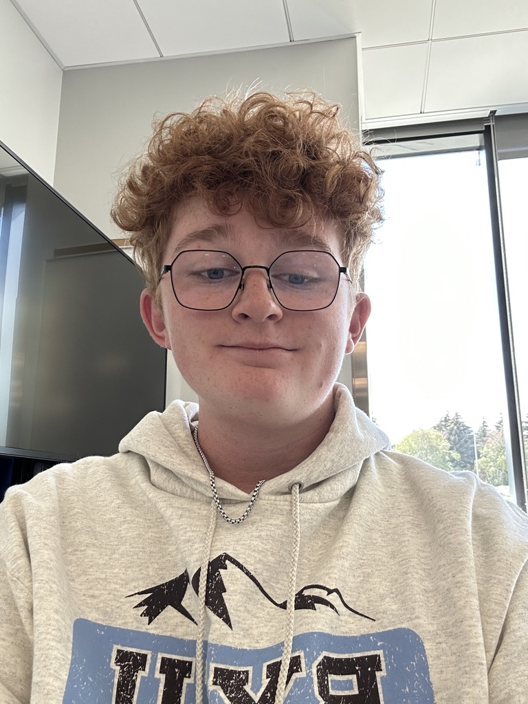

About Me

Hey there! I’m Peter Thacker 👋
I’m a Computer Science student at BYU–Idaho who loves building things that blend creativity, design, and technology. Whether I’m developing a website, designing a logo, or writing Python code, I focus on making projects that look clean and work smoothly.
I’m also a proud member of the BYU–Idaho Drumline 🥁 — it’s where rhythm, teamwork, and performance all come together. Outside of class and drumline, I enjoy swing dancing, disc golf, and spending time with friends exploring Rexburg.
My goal is to become a well-rounded developer who not only codes but also creates meaningful digital experiences. I love seeing how technology can inspire creativity and connection.
“Creativity is intelligence having fun.” – Albert Einstein
Skills & Interests
💻 Web Development (HTML, CSS, Python)
🎨 Design & Branding (Logos, Layouts, Colors)
🥁 Drumline & Music Media
🧠 Problem Solving & Creativity
💬 Teamwork & Communication
📚 Continuous Learning & Growth
Fun Facts About Me
- I’ve been part of multiple BYU–Idaho performances with the drumline.
- I built this entire site from scratch for my WDD 130 course.
- I love experimenting with App ideas
- I can play rhythms in 7/8 time but still struggle not to tap my foot in 4/4 😄.